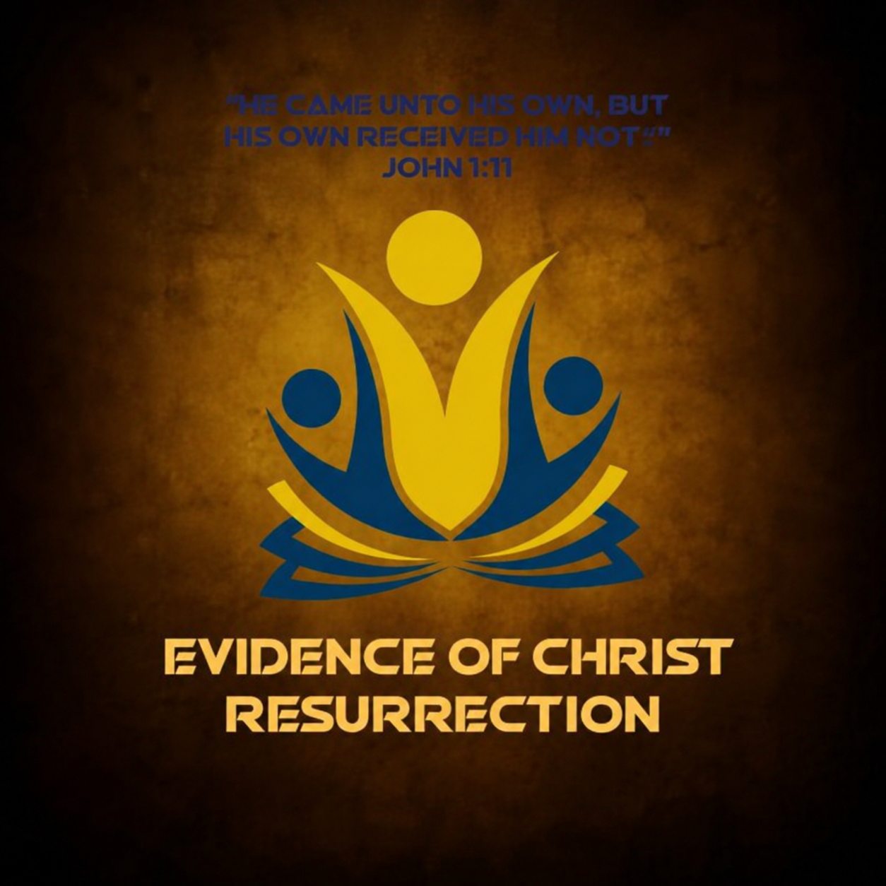

Evidence of Christ ResurrectionOur WhatsApp group is the central hub for daily fellowship. Receive morning devotionals, participate in group prayer sessions, get live service alerts, and connect with brothers and sisters globally.
📲 Click Here to Join WhatsApp GroupAll meetings and links are shared directly in our WhatsApp group.
| Gathering | Day | Activity |
|---|---|---|
| Bible Studies | Monday,Wednesday and Friday | Scripture reading, and Bible Studies. |
| Prayer sessions | Tuesday and Thursday | Intercessory prayer and deliverance prayers. |
| Guest Preacher Message/General testimony | Saturday | Word ministration, knowledge and resurrection praise. |
| Bible Quiz | Two Fridays in a Month | Learning together with fun and love |
Never walk alone. Receive scripture-based encouragement and strength every morning.
A committed body of believers standing in agreement for healing, restoration, and breakthroughs.
Fellowship with believers from different cultures united by the power of Jesus Christ.
Has God done something miraculous in your life through this ministry? Share your story to encourage others and give glory to God.